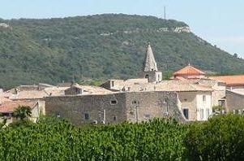
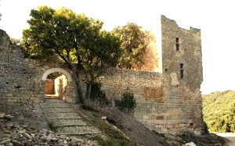
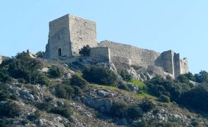
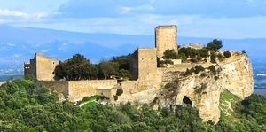
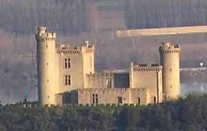
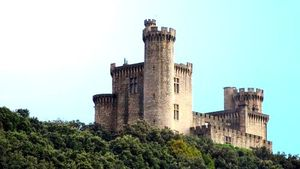
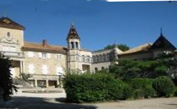
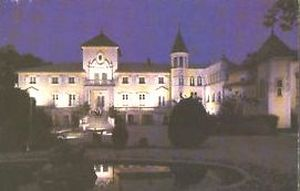
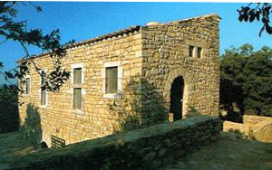

Recensement Jean-Claude Truffet
| Département | 30 — Gard |
| Canton | Bagnols sur Cèze |
| Commune | Chusclan |
| Type d'édifice | Vestiges |
| Période d'origine | XIII |









Trois château à Chusclan, celui de Gicon vestiges du XIIe siècle, Jonquier XIIe siècle et St-Emetery du XVIe siècle. CHUSCLAN-GICON au début de 1382, les Tuchins campèrent dans les gorges de la Cèze où ils furent rejoints par des nobles dont Régis de Saint-Michel-d'Euzet, Étienne Augier, dit Ferragut du Pin, Vachon de Pont-Saint-Esprit et Verchère de Vénéjan qui prirent leur tête. Ils semparèrent alors de Cavillargues, Chusclan et Tresques, avant de piller les châteaux de Sabran, La Roque-sur-Cèze, Saint-Laurent-des-Arbres et Cornillon. Dans ce dernier château se trouvait le trésor de Clément VI. Son neveu, Guillaume III Roger de Beaufort, alors lieutenant des armes du Sénéchal de Beaucaire, organisa la répression. En septembre 1382, il recruta des mercenaires et fit venir une compagnie darbalétriers dAvignon. Ses troupes cantonnées à Bagnols-sur-Cèze attaquèrent alors Cornillon. Dirigées par Gantonnet d'Abzac, commandant du Saint-Père pour le Païs de Saint-Esprit, elles semèrent la terreur. Guillaume III fit ensuite intervenir son capitaine des gardes de Bagnols, Jean Coq, ce dernier réussit à pacifier le pays en expulsant les chefs du Tuchinat. Ce qui permit de signer la paix en février 1383. GICON, en 1211 donation aux évêques d'Uzès par Philippe Auguste. On apprend aussi le rôle important qu'a joué ici la grande famille de Sabran, jusqu'en 1790 les seigneurs qui se succédèrent depuis le XVe siècles, les Fages et les Etables, puis les David seigneur de Jonquier et de Gicon qui le rachetèrent à la Révolution passa aux Durand de Fontmagne, en ruines depuis plusieurs siècle servit de carrière. Aujourd'hui entourait de vignoble. JONQUIER, château du XIIe siècle remanié au XIXe siècle, au XVIe siècle aux David du Buisson seigneur de Jonquier et de Gicon. Au XXe siècle le château appartenait à Louis Martin et retour à Monsieur David. ST-EMETERY pas d'information historique, aujourd'hui transformé en maison de retraite.
Le château de Gicon, donné en 945 aux Bénédictins de Saint Saturnin, ils construisent un château forteresse dont l'enclos abrite une garnison: logis seigneurial, tours de garde, donjon central. Il hébergea le roi Saint Louis sur le chemin de la croisade. Plusieurs fois ruiné et séparé à la Renaissance, le donjon est miné selon la technique du temps en 1631-1632, fin du pouvoir féodal local contre le centralisme de Louis XIII et Richelieu. Délaissé par ses cinq propriétaires successifs de 1816 à 1973, le site pendant trois siècles est une carrière de pierres d'où un retour à la végétation naturelle, qui domine le village, ancienne forteresse abandonné depuis longtemps signalé au XIXe siècle en état de ruines. Aujourd'hui entouré de vestige de plusieurs bâtiments. Une association depuis 1985 s'occupe à le restaurer.
Jonquier forteresse, deux corps de logis flanqué de tours rondes crénelées séparés par une enceinte crénelée néo-médiéval : tour carrée. Ruines de l'ancien château fort de la Parasque du XIIe siècle.
Saint-Emétéry, corps de logis rectangulaire à deux niveaux, pavillon carré saillant sur partie central, une aile en retour et tourelle octogonale sur façade et sur angle.
Famille de Sabran
"
Vestiges de Gicon, de Jonquier et château de Saint-Emétéry